Navigation cleanup
Live on the PR preview at pr-937.clarity-video.workers.dev. Pull request: #937. Screens use test accounts on the preview's own seeded database.
What was wrong
Tapping a link in the phone drawer left the drawer open. Settings stayed expanded after you left it. Settings and Learn listed their sub-pages twice, once in the sidebar and again as tabs on the page. Admin listed its sub-pages only in the sidebar. Home listed five type filters that the page's own filter already covers. The desktop sidebar forgot that you had collapsed it.
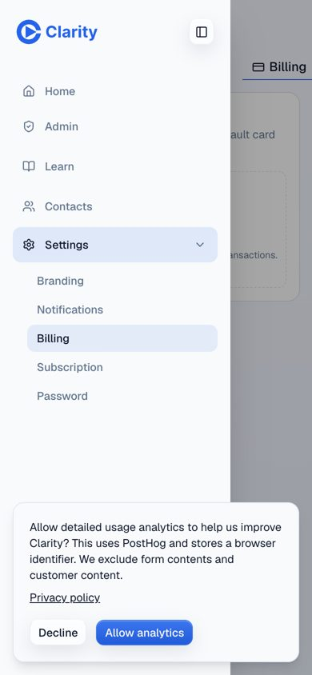
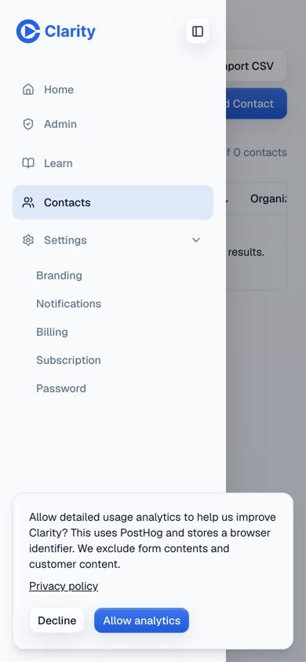
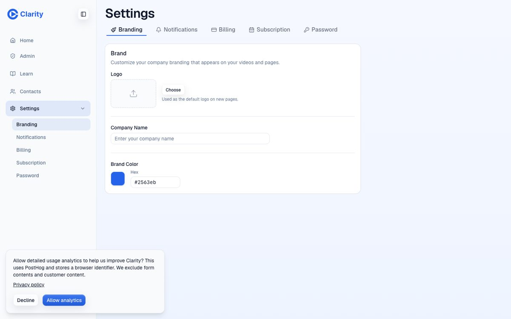
What ships in every option
One list of places, used everywhere: Home, Contacts, Learn, Settings, and Admin for admins. Each section lists its sub-pages once, as links under the page title. The drawer closes when you tap a link or press Escape, and a closed drawer can't take keyboard focus. The desktop sidebar remembers that you collapsed it.
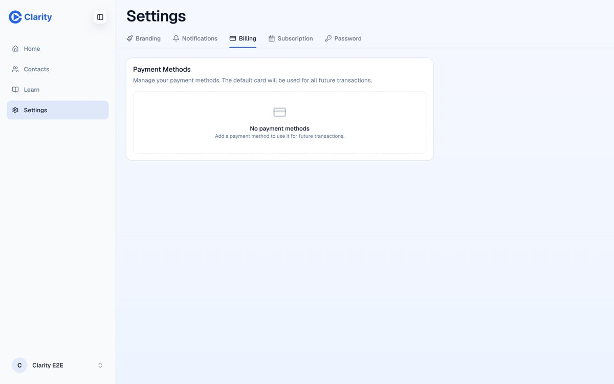
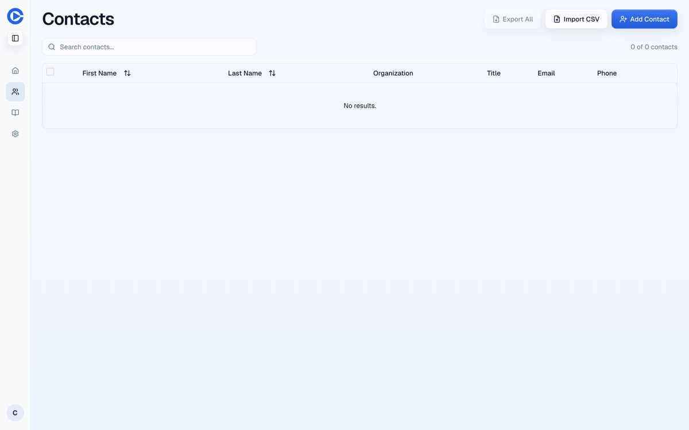
Pick a phone pattern
Open the preview on your phone with one of these links. Your choice sticks until you switch.
A. Drawer ?nav=drawer
A menu button in each page header opens the sidebar. Closest to today. Every move to another section costs two taps, and Record lives only on Home.
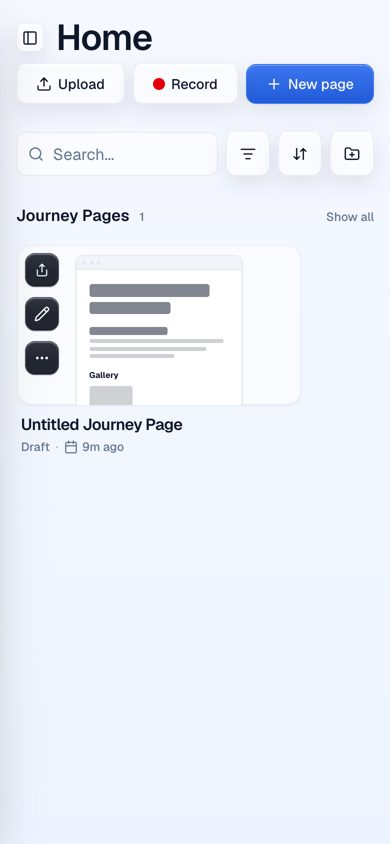
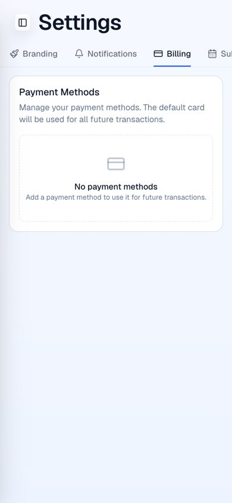
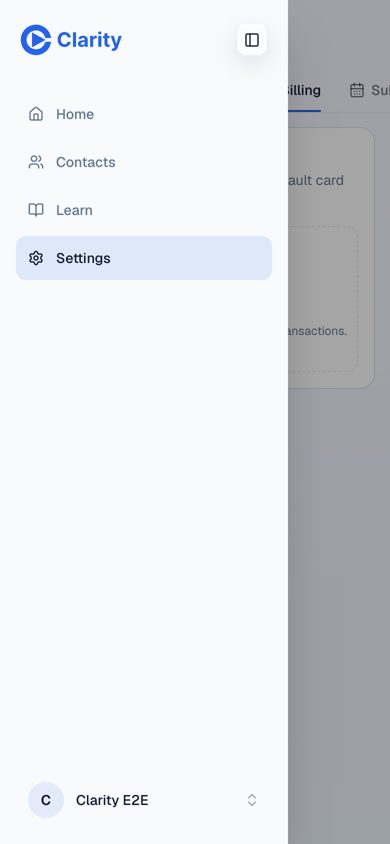
B. Bottom tab bar ?nav=tabsRecommended
Home, Contacts, Record, Learn, More, always one thumb away. Record sits in the middle because recording is the product. More opens the drawer for Settings, Admin, Profile and Sign out. This is the standard pattern on iOS and Android for apps with four or five main places.
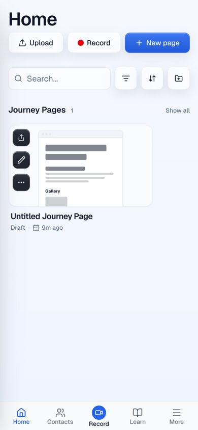
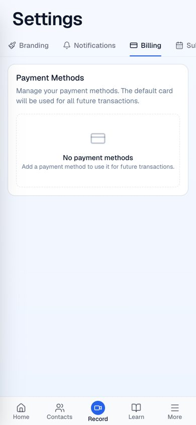
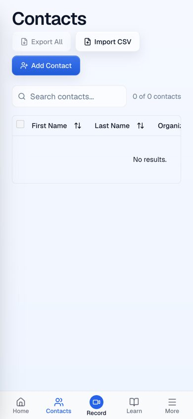
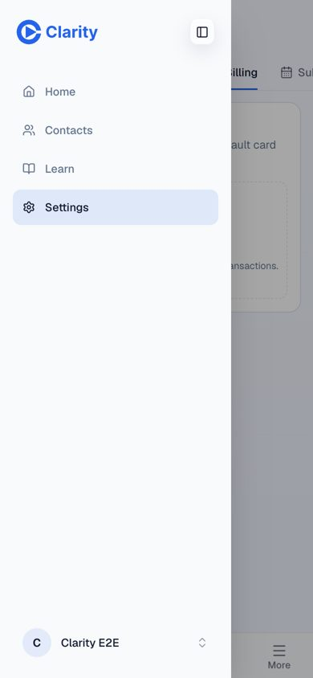
C. Top bar ?nav=top
Logo, account button, and a scrolling row of places at the top. Everything is one tap away, but on Settings and Learn it stacks two rows of links, and Admin falls off the right edge on a narrow phone.
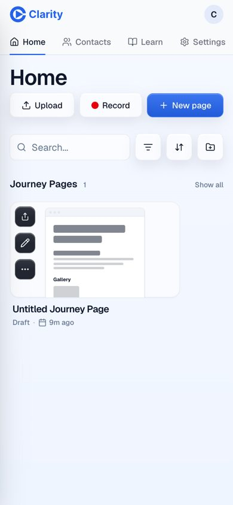
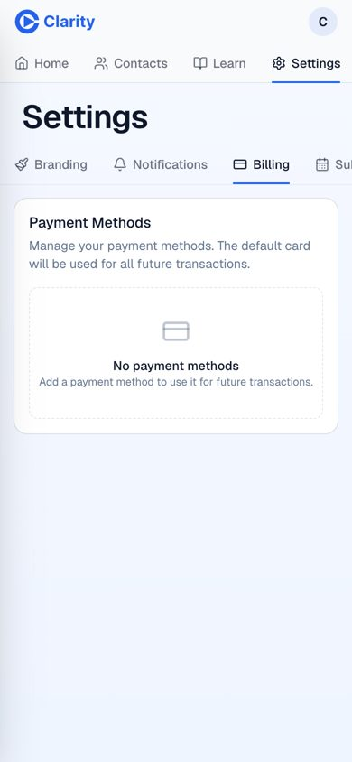
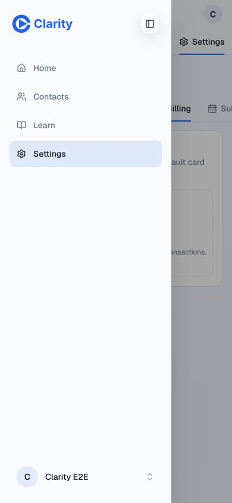